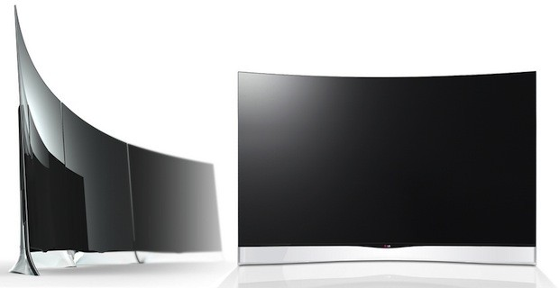

LG FIRST TO LAUNCH OLED TV IN EUROPEAN MARKET
Stunning Curved OLED TV Rolls Out Initially in Germany, Other Countries to Follow

SEOUL, Aug. 25, 2013 - LG Electronics (LG) today announced the availability of its CURVED OLED TV (55EA9800) in Germany, becoming the first TV maker to bring advanced OLED TV technology to European customers. The CURVED OLED TV will be sold at select retailers across the country starting this week and will roll out in other European markets in the fourth quarter.
“LG is fully committed to delivering the most advanced OLED TVs to European customers,” said In-kyu Lee, vice president and head of the TV division at LG Electronics’ Home Entertainment Company. “With next generation display technology and an ultra-thin curved design, our CURVED OLED TV represents the beginning of a new era in home entertainment.”
DisplaySearch estimates Europe will account for up to 30 percent of the global OLED TV market by 2017. The respected research firm also projects worldwide demand for OLED TVs will grow to more than seven million units by 2016. As the first company to offer a large-screen CURVED OLED TV in the United States and Europe, LG is poised to become the standard-setter for the next generation TV market.
Featuring an elegantly curved screen and LG’s own WRGB OLED technology, the CURVED OLED TV provides exceptional picture quality and an immersive viewing experience. A triumph of design, the cutting-edge unit has been awarded the prestigious Red Dot: Best of the Best honor and has also been certified by respected international product testing bodies, TÜV Rheinland, Intertek and VDE for its unsurpassed picture quality. LG’s premium TV is also the first OLED TV in the world to have received THX certification.
The CURVED OLED TV will be introduced to German customers at a special event at high-end electronics retailer HIFI Profis in Frankfurt. The one-of-a-kind TV in Germany will carry a suggested price of EUR 8,999. Prices in other European markets will be announced at launch time.[/SIZE]